Pintura
Arte de la representación gráfica utilizando pigmentos mezclados con otras sustancias aglutinantes
¿Que es la Artes Plasticas?
Cuando hablamos de artes plásticas, nos referimos a las técnicas de elaboración de obras de arte en las cuales se utilizan materiales y elementos susceptibles de ser moldeados, modificados o transformados por el artista.
Dichos elementos se consideran por ende recursos plásticos, ya que le sirven al artista de materia prima para expresar su perspectiva, imaginación o visión específica de lo real.
Este término es empleado en Bellas Artes para diferenciar a las artes visuales, que deben ser percibidas por la vista del espectador, de las que involucran también el sentido del oído (música, texto recitado), como las artes escénicas.
Así, se consideran artes plásticas a la pintura, la escultura, el dibujo, la arquitectura, el grabado, la cerámica, la orfebrería, artesanía y pintura mural.
Es muy usual que los artistas plásticos, sobre todo en la exploración temprana de su talento, se avoquen a diversas disciplinas plásticas al mismo tiempo, ya que las artes plásticas parten de principios y aspectos comunes entre sí, como lo pueden ser la forma, la textura, el color o, inclusive, el movimiento.
Las artes plásticas ocupan actualmente uno de los principales rubros artísticos de los museos, y son, junto con las artes escénicas, la literatura, el cine, la música y la fotografía, las máximas expresiones contemporáneas del arte.

Tipos de artes plásticas
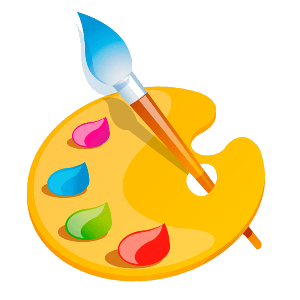
Dibujo
Arte que enseña a dibujar, como la delineación, figura o imagen ejecutada en oscuro y claro
Arte que enseña a dibujar, como la delineación, figura o imagen ejecutada en oscuro y claro
Escultura
Arte de modelar el barro, tallar en piedra, madera y otros materiales.
Arte de modelar el barro, tallar en piedra, madera y otros materiales.
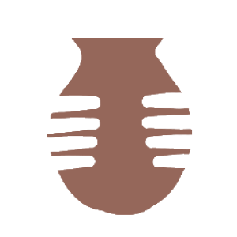
Ceramica
Arte de fabricar vasijas y otros objetos de arcilla u otro material cerámico por acción del calor
Arte de fabricar vasijas y otros objetos de arcilla u otro material cerámico por acción del calor
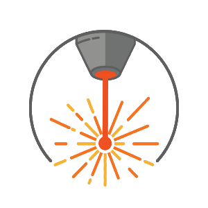
Grabado
Disciplina artística en la que el artista utiliza diferentes técnicas de impresión
Disciplina artística en la que el artista utiliza diferentes técnicas de impresión

Artesania
La artesanía como actividad material se diferencia del trabajo en serie o industrial.
La artesanía como actividad material se diferencia del trabajo en serie o industrial.
Ejemplos de Artes Plasticas
- Pintura. El guernica de Pablo Picasso (s. XX).
- Escultura. El pensador de Auguste Rodin (s. XX)
- Cerámica. Los jarrones cerámicos de Théodore Deck (s. XIX).
- Orfebrería. El altar de San Ambrosio de Milán, hecho por Vuolvinus (c. 850).
- Dibujo. Los bocetos de bailarinas de Edgar Degas (s. XX).
- Grabado. La serie de grabados de Goya bautizados “Los caprichos” (s. XX).
 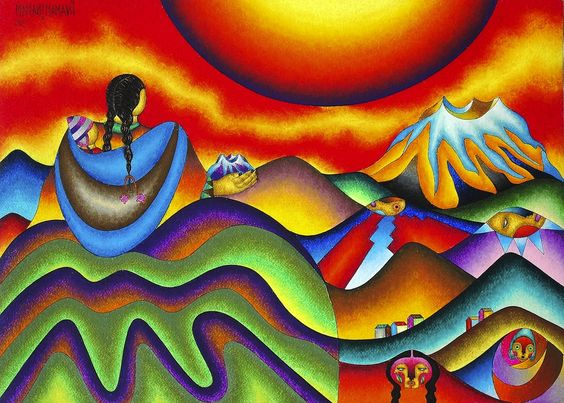
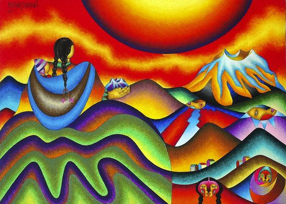Caracteristicas de las Artes Plasticas
- Color. Los colores se le dan a las obras de arte mediante pigmentos y materiales que, al ser impactados por la luz blanca, absorben todos los tonos del arcoíris menos uno. Dicho color reflejado es el que perciben nuestras retinas.
- Forma. La forma tiene que ver con la geometría de las cosas, con su regularidad o irregularidad, con sus límites perceptibles a simple vista.
- Textura. La textura es apreciable mediante el tacto o también la vista, y tiene que ver con la superficie de los objetos: su rugosidad o su lisura, su filo o las sensaciones que transmite su capa externa.
- Movimiento. En algunos casos, las obras plásticas pueden contar con movimiento, como es el caso de artistas como el argentino Julio LeParc, cuyas esculturas podían ser activadas por electricidad para transmitirle al espectador formas y colores hipnóticos.
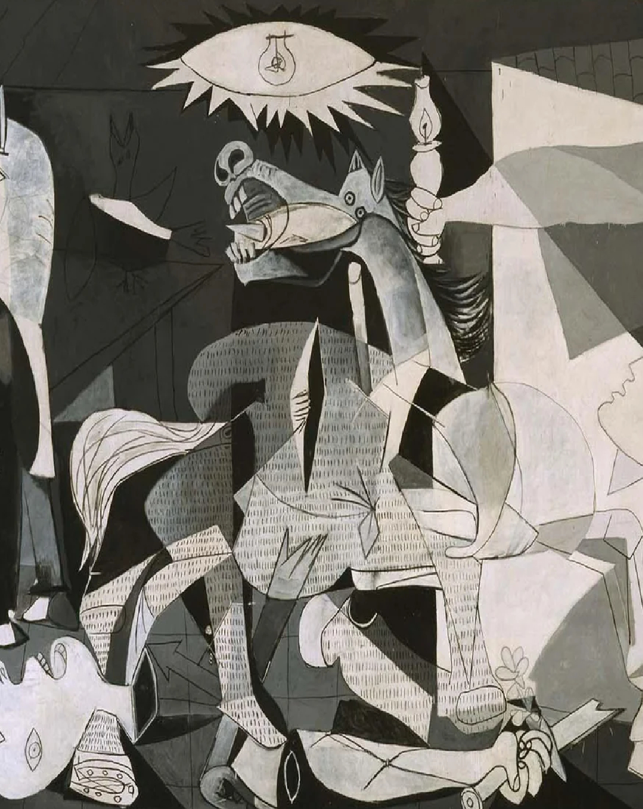
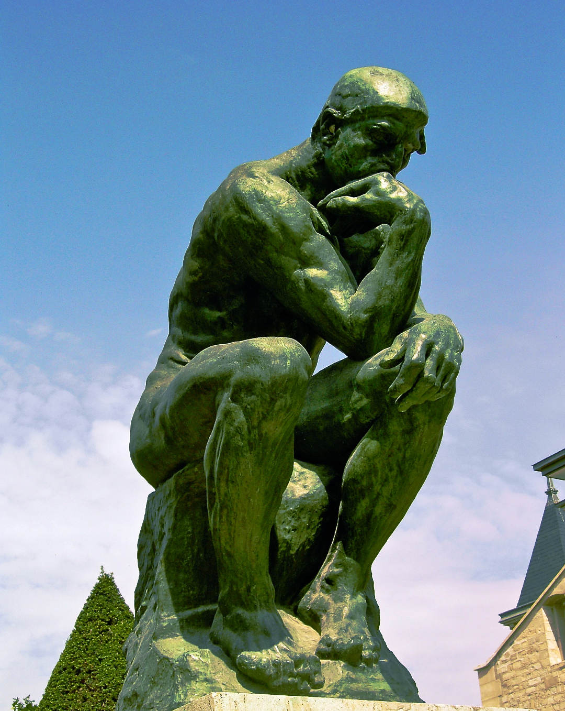
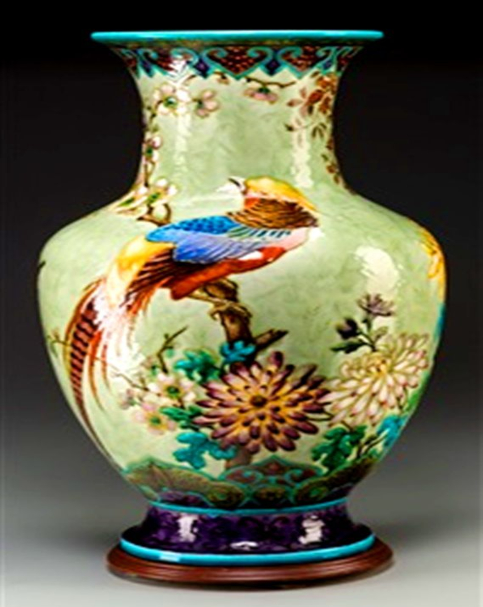
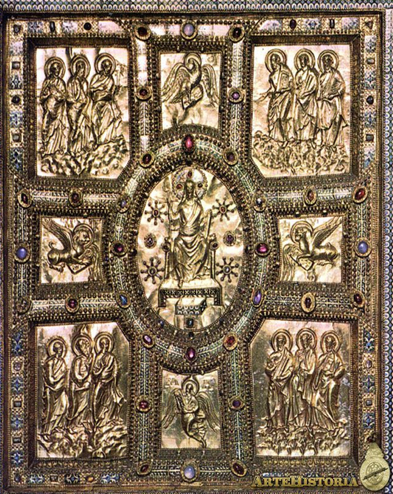
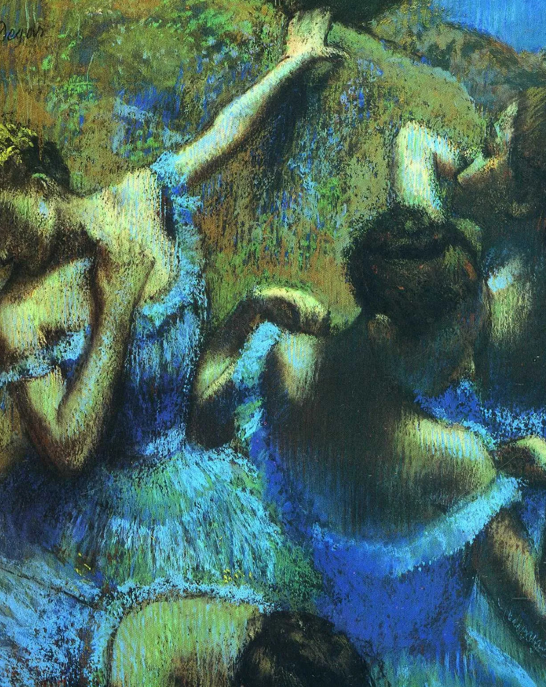
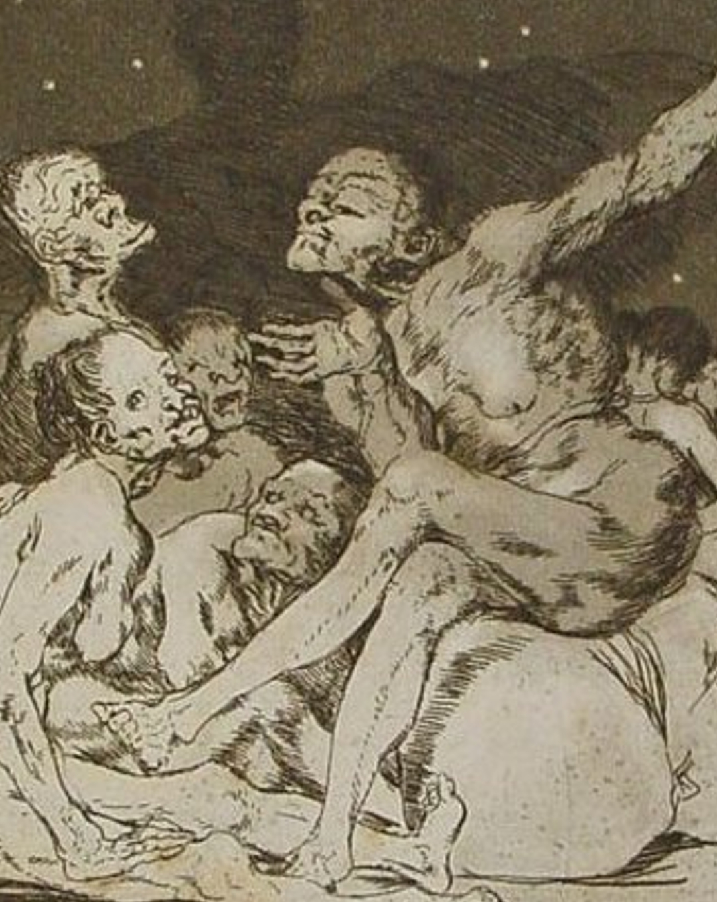
Galeria de las mejores obras de arte
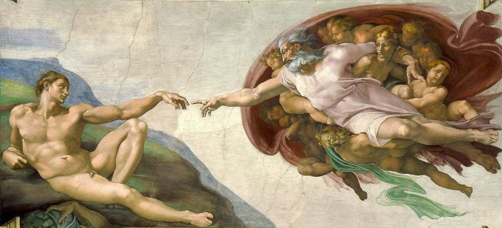
 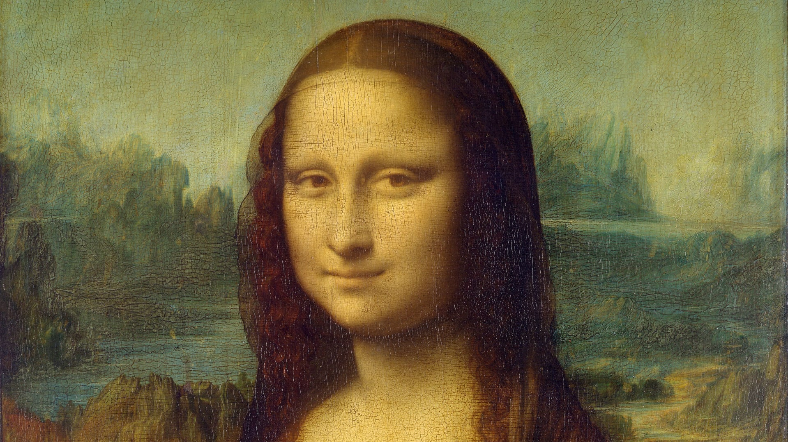
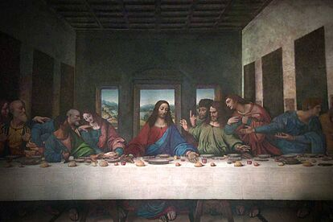
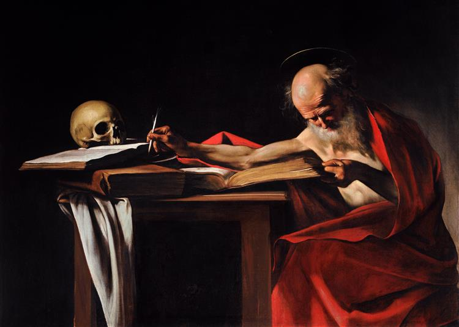
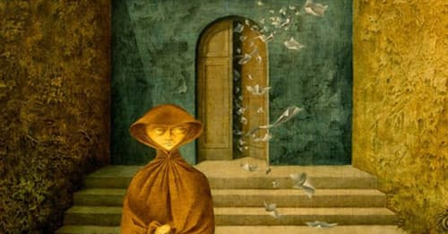
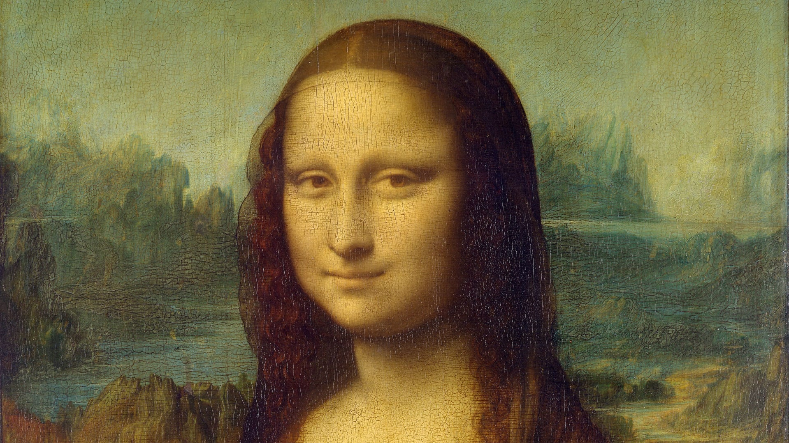
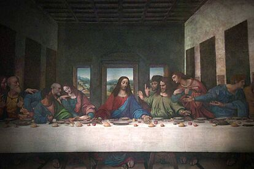
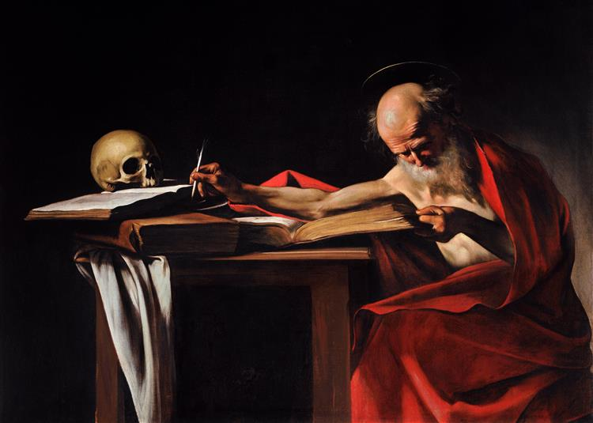
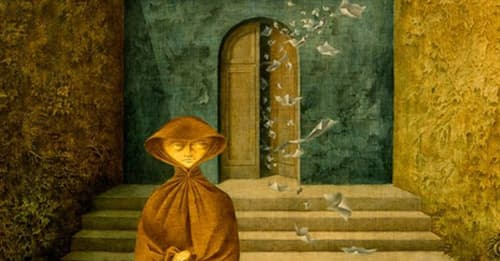
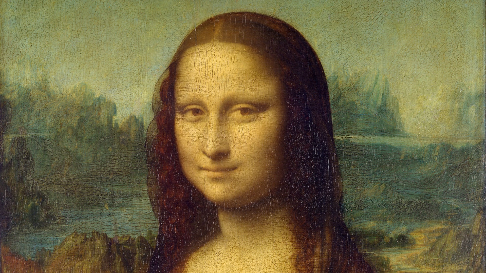
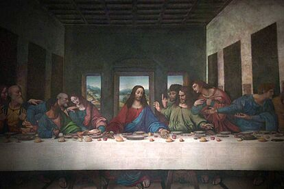
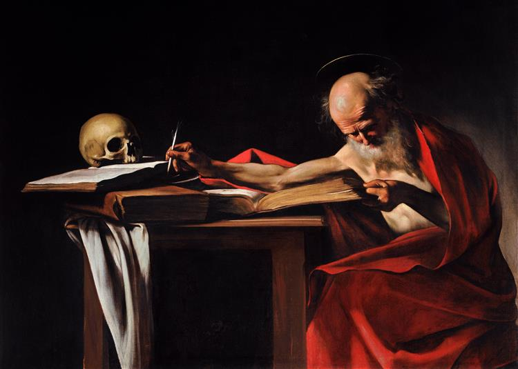
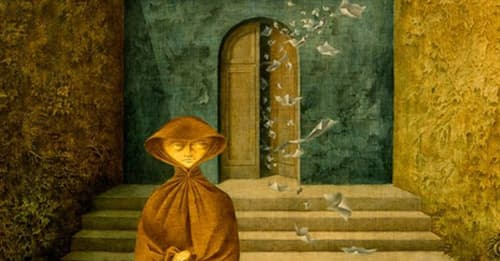